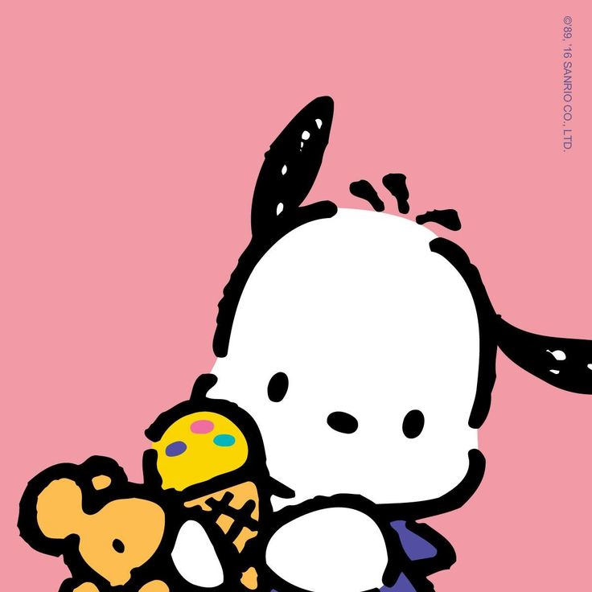
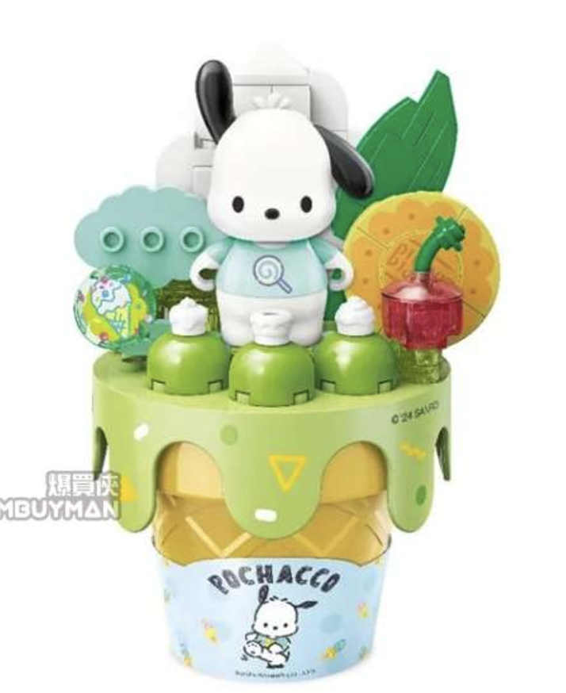

Dec 4, 2024 Heyy guys! Today I bought a BUNCH of pochacco keychains, and put then all toghter! It looks super pretty! I hung it on my background, and it looks super good!!! Today I also got ice cream, banana ice cream, ofc, and I also got some chocolate sprinkles as a topping. It tasted pretty good! I am planning on finishing my pochacco lego soon, so I might be busy tonight. Okay yeah! That is pretty much my whole day. Bye guys! Have a good day/night!  